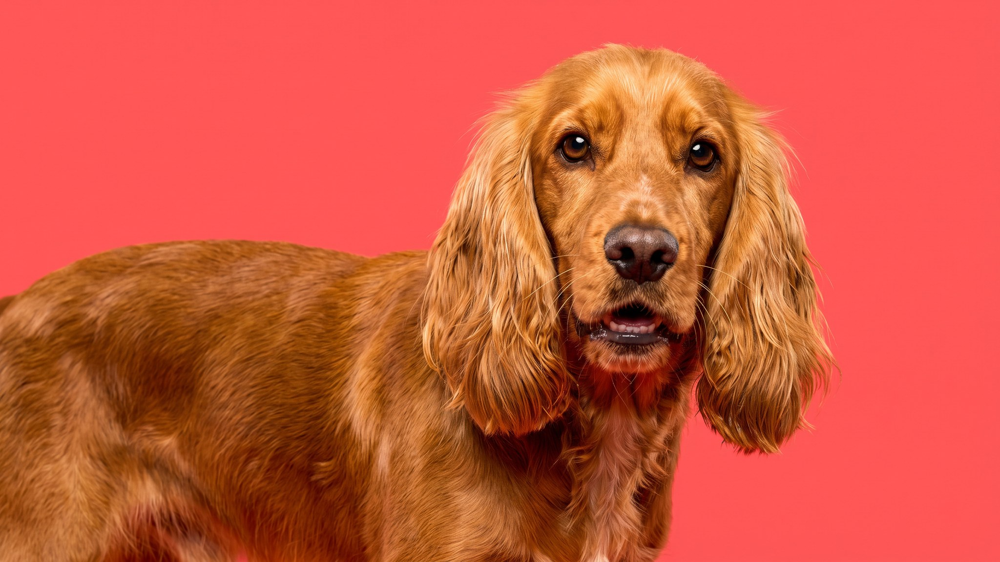

Среди всех подружейных спаниелей клюмбер стоит особняком: взрослый кобель весит до 36 кг — почти вдвое тяжелее спрингера. Эта порода создавалась не для резвых галопирующих охот, а для неторопливой работы в густом подлеске. В квартире клюмбер ведёт себя так же: солидно, без суеты, с достоинством. Но у этой медлительности есть обратная сторона — метаболизм, который легко ломается без чёткого режима.
🐾 У вас клюмбер-спаниель?
AnimaLife соберёт уход под породу: к каким болезням есть склонность, что проверять по возрасту, чем кормить и когда пора к врачу. Бесплатно, прямо в мессенджере.
Собрать план ухода → Собрать в MAX →
У вас iPhone? AnimaLife есть в App Store
Клюмбер спокоен, незлобив и не притязателен по части активности. Он не будет тянуть поводок в направлении горизонта и не устроит хаос, если прогулка сегодня короче обычного. Но этот флегматизм — внешний. В поле или в лесу клюмбер включается целиком: упорно работает носом, не бросает след, держит темп часами. Он не истеричен, но и не безынициативен.
К посторонним относится ровно — без агрессии и без заискивания. К детям терпелив. В семье привязывается ко всем, но выберет одного хозяина, с которым будет ходить тенью. Длительное одиночество переносит хуже, чем кажется по внешнему виду.
Склонность к набору веса у клюмбера генетически заложена: порода должна была работать медленно и долго, а не гнаться за добычей вскачь. В домашних условиях, без охотничьей нагрузки, это превращается в риск ожирения.
Белая густая шерсть клюмбера красива, но требует дисциплины. Она собирает грязь и репейники после каждой прогулки в природе. Расчёсывайте 3–4 раза в неделю, в период линьки — ежедневно. Особое внимание — очёсам за ушами и в паху, где быстрее всего образуются колтуны.
Висячие уши клюмбера плохо вентилируются. Осматривайте ушную раковину раз в неделю: чистая, без запаха — норма. Покраснение, налёт или запах — повод к ветеринару, не к самолечению.
У многих клюмберов есть небольшие складки вокруг глаз и на морде. Протирайте их мягкой сухой салфеткой при каждом расчёсывании — влажность в складках создаёт раздражение.
Слюноотделение у породы заметное — особенно после еды и на жаре. Держите полотенце рядом с миской. Это не недостаток, это особенность.
Клюмбер — крепкая порода, но у массивных собак есть типичные зоны риска. Суставы — главная из них: большая нагрузка на локти и тазобедренные суставы при солидном весе. Обсудите с ветеринаром режим нагрузки и рацион с первого щенячьего визита.
Глаза осматривайте регулярно: складки вокруг орбиты и вывернутые веки (эктропион) встречаются в породе. Заметили слезоточивость или прищуривание — к врачу, не ждите.
Спина при лишнем весе — ещё одна уязвимая точка. Контроль массы тела напрямую влияет на качество жизни собаки в среднем и пожилом возрасте.
🐾 Ваш питомец — клюмбер-спаниель?
Заведите профиль в AnimaLife: приложение запомнит породу, возраст и вес и будет подсказывать по уходу именно для неё. Вопросы AI-ветеринару — круглосуточно и бесплатно.
Завести профиль → Завести в MAX →
У вас iPhone? AnimaLife есть в App Store
🐾 Понравился разбор?
Подпишитесь на канал — каждый день разбираем по одному тревожному симптому у кошек и собак: что в пределах нормы, а когда пора к врачу. Подпишитесь, чтобы не пропустить разбор, который может спасти здоровье вашего питомца.
Материал носит информационный характер и не заменяет очную консультацию ветеринара.